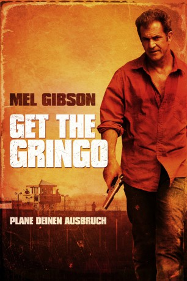

#547 Get the Gringo
 gesehen am 18.12.2015
gesehen am 18.12.2015
 
 IMDB-Wertung: 7.0 / 10
IMDB-Wertung: 7.0 / 10  Metascore: 60
Metascore: 60 
Nachdem der Kriminelle Driver während einer Verfolgungsjagd illegalerweise die Grenze nach Mexiko überquert hat, wird er dort nach seiner Festnahme in einen mexikanischen Knast gesteckt. Bei dem Gefängnis handelt es sich eigentlich eher um eine Kleinstadt, die abgeriegelt ist und nur von Verbrechern bewohnt wird. Dementsprechend ist der Umgang besonders rau und Driver hat Schwierigkeiten, sich anzupassen. Er erhält jedoch unerwartet Hilfe von einem zehnjährigen Jungen, der sich in dem Gefängnis-Dorf bestens auskennt. Wegen seiner extrem seltenen Blutgruppe ist die Leber des Jungen ein begehrtes Objekt, hinter der der Schwerverbrecher Javi her ist. Als Driver erfährt, dass die Mutter des Kindes in Schwierigkeiten steckt, beschließt er, seine Dankbarkeit zu zeigen und der kleinen Familie zu helfen. Vorerst muss er jedoch erst einmal aus dem Gefängnis ausbrechen...
Jahr: 2012
Dauer: 96 Minuten
FSK: 18
Land: USA Studio: 20th Century Fox Home EntertainmentTonspuren:
Untertitel: Deutsch,
Auflösung: 720p (1280x536) Größe: 2723 MB
Genre: Action, Krimi, Drama, Thriller
Regisseur: Adrian Grunberg
Drehbuch: Mel Gibson, Stacy Perskie, Adrian Grunberg
Soundtrack: Antonio Pinto
Darsteller:
 Mel Gibson als Driver
Mel Gibson als Driver- Kevin Hernandez als Kid
 Daniel Giménez Cacho als Javi
Daniel Giménez Cacho als Javi Jesús Ochoa als Caracas
Jesús Ochoa als Caracas- Dolores Heredia als Kid's Mom
 Peter Gerety als Embassy Guy
Peter Gerety als Embassy Guy- Roberto Sosa als Carnal
 Peter Stormare als Frank
Peter Stormare als Frank Gerardo Taracena als Romero
Gerardo Taracena als Romero Dean Norris als Bill
Dean Norris als Bill Tenoch Huerta als Carlos
Tenoch Huerta als Carlos Fernando Becerril als Prison Director
Fernando Becerril als Prison Director Scott Cohen als Frank's Lawyer
Scott Cohen als Frank's Lawyer Bob Gunton als Thomas Kaufman
Bob Gunton als Thomas Kaufman- Jace Jeanes als American Hitman 4
- Clayton J. Barber als American Hitman 5
 Zak Knutson als American Hitman 2
Zak Knutson als American Hitman 2- Tom Schanley als American Hitman 3
- Aaron Cohen als American Hitman 6
 Gustavo Sánchez Parra als Size 11
Gustavo Sánchez Parra als Size 11 Guillermo Ríos als Lacra 4
Guillermo Ríos als Lacra 4 Patrick Bauchau als Surgeon
Patrick Bauchau als Surgeon- Denise Gossett als Thomas Kauffman's Secretary
 Stephanie Lemelin als Frank's Lawyer's Secretary
Stephanie Lemelin als Frank's Lawyer's Secretary- Suzanne Cryer als Driver's Wife
- Paloma Arredondo als Wife Renting Tent
- Aarón I. Campos als Another Guy
- Sofía Sisniega als 20 Year Old Bombshell
 J.J. Perry als Reginald T. Barnes
J.J. Perry als Reginald T. Barnes- Blue Demon Jr. als Wrestler 1
- Joan Sendra Maikol als Police 3
- Mario Zaragoza als Vasquez
- Mayra Serbulo als Nurse
- Owen Dunne als Jesse
- William Gibson als Mark
- José Montini als El Pueblito's Doctor
- Manuel Domínguez als Lacra 2
 Dagoberto Gama als Lacra 3
Dagoberto Gama als Lacra 3- Iñaki Goci als Lacra 5
- Carlos Ramos als Lacra 6
- Noemi Palomino als Aunt Flor
- Marco Rojas als Javi's Doctor
- Jorge Verdugo als Guard
- Balo Bucio als Soldier
- Antonio Zúñiga als Visitor Guard
- Jeff Caughey als Smelly Guy
- Marco Aurelio Nava als Car Lacra
- Davenia McFadden als Large Woman
- Regina Orozco als Mrs. Serrano
- Boza als Soccer Guard
Datei: X:\FSK18-2012\Get the Gringo (2012, FSK18, 1280x536).mkv seit 08.03.2015
Festplatte: FSK18
 Es gibt insgesamt 26 Filme in der Gruppe 'FSK18-2012'
Es gibt insgesamt 26 Filme in der Gruppe 'FSK18-2012'